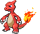

-
Bulbasaur #001

- Grama
- Veneno
Há uma semente de planta nas suas costas desde o dia que este Pókemon nasce. A semente cresce lentamente.
-
Ivysaur #002

- Grama
- Veneno
Quando o bulbo em suas costas cresce, a parece perder a capacidade de ficar de pé com suas patas traseiras.
-
Venusaur #003

- Grama
- Veneno
Sua planta floresce quando está absorvendo energia solar. Ele permanece em movimento para buscar a luz solar.
-
Charmander #004

- Fogo
Tem preferências por coisas quentes. Quando chove, diz que se o vapor da ponta de sua cuda.
-
Charmeleon #005
- Fogo
Tem uma natureza bárbara. Na batalha, ele chicotea sua cauda ardente e corta com garras afiadas.
-
Charizard #006

- Fogo
Ele cospe fogo que é quente o suficiente para derreter pedregulhos. Pode causar incêndiso florestais soprando chamas.
-
Squirtle #007

- Água
Quando ele retrai seu longo pescoço em sua concha, ele esquicha água com forã vigorosa.
-
Wartortle #008

- Água
É reconhecido como um símbolo de longevidade. Se sua concha tem algas, esse Wartortle é muito antigo
-
Blastoise #009

- Água
Ele esmaga seu inimigo sob seu corpo pesado para causar desmaios. Em uma pitada, ele se retirará dentro de sua concha.
-
Caterpie #010

- Inseto
Para proteção, ele libera um fedor horrível da antena em sua cabeça para afastar os inimigos.